Experiências
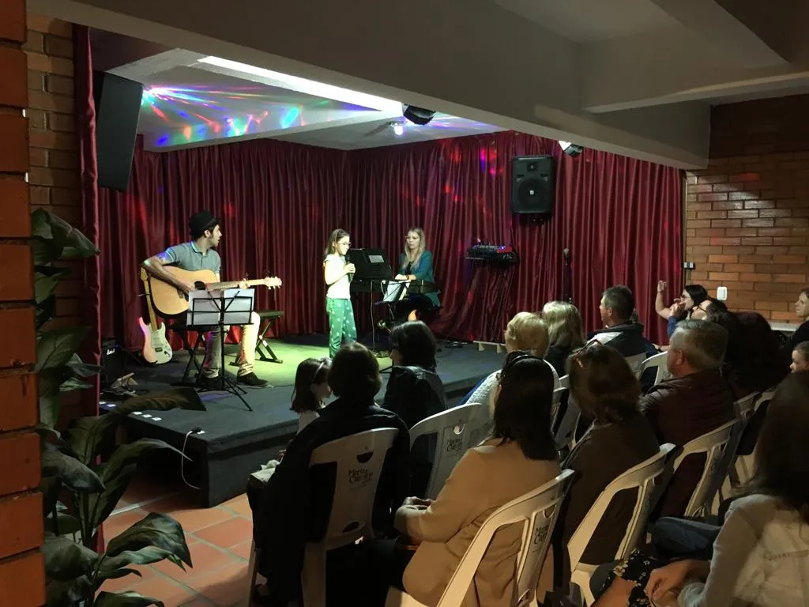
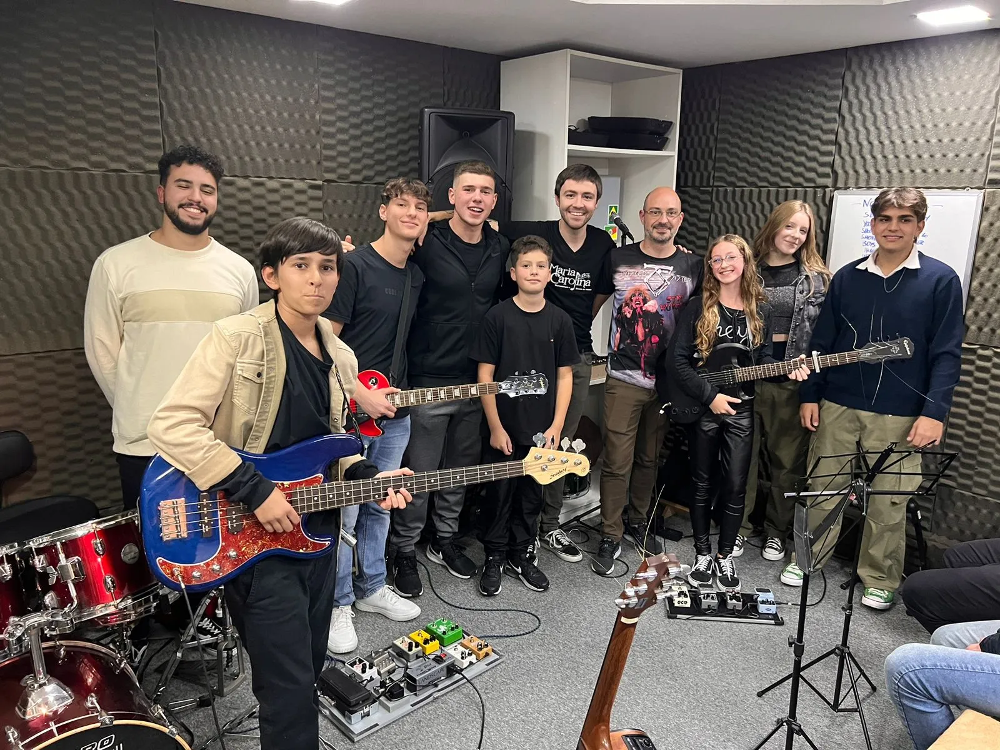
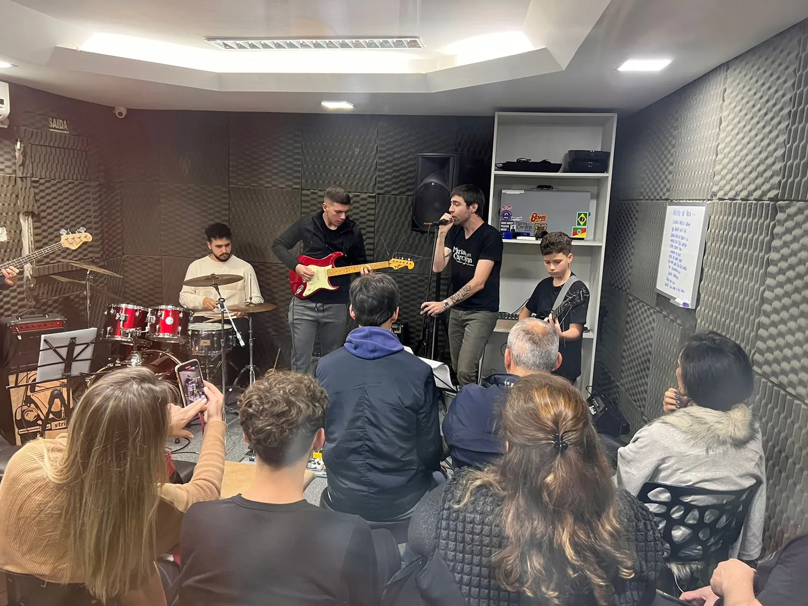
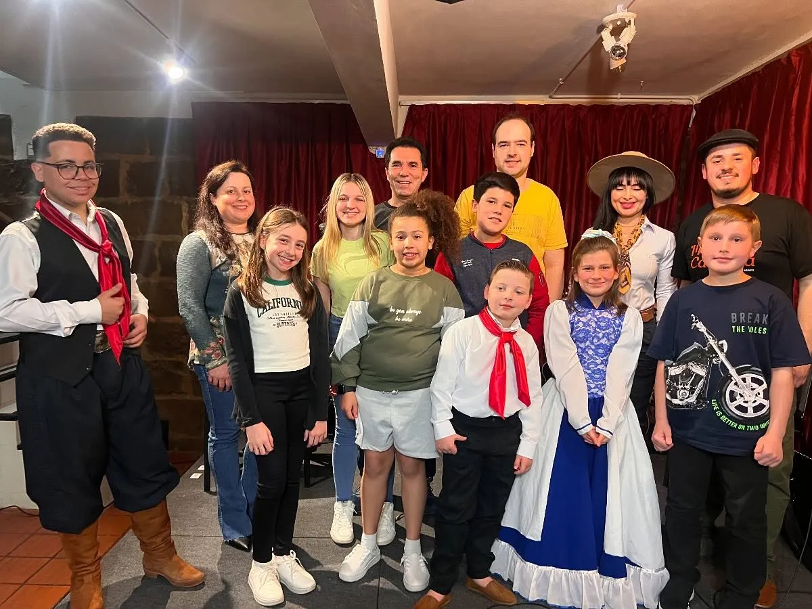
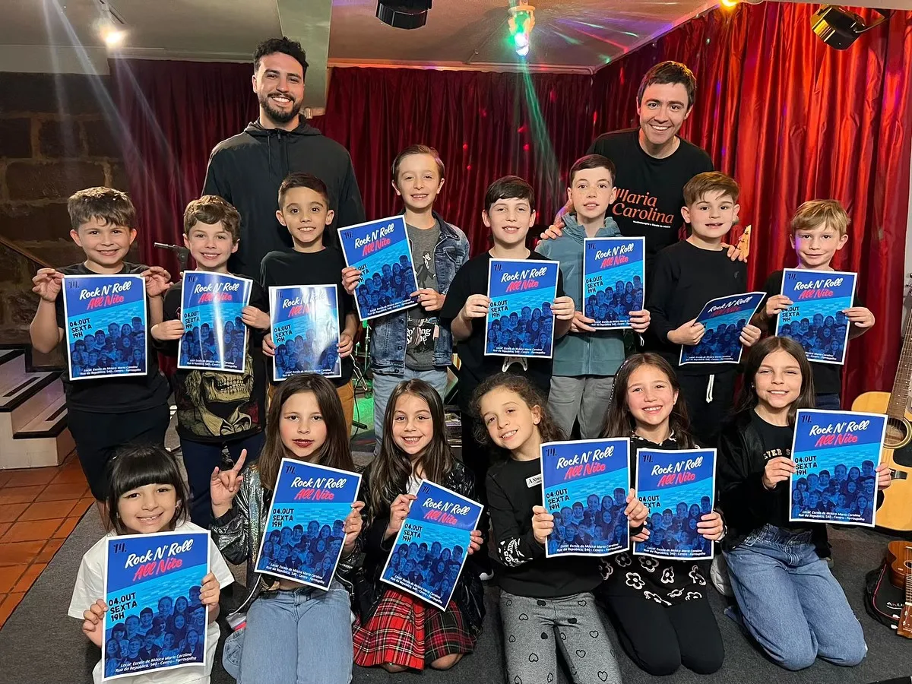
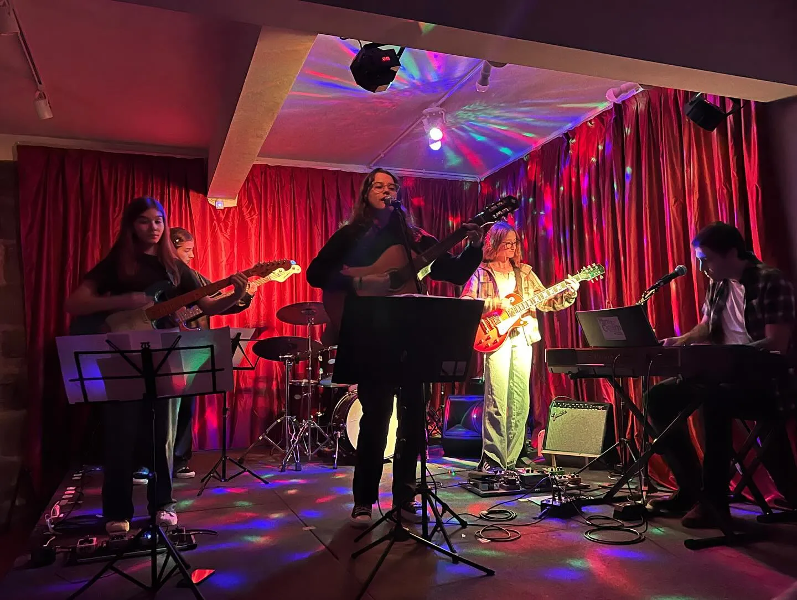
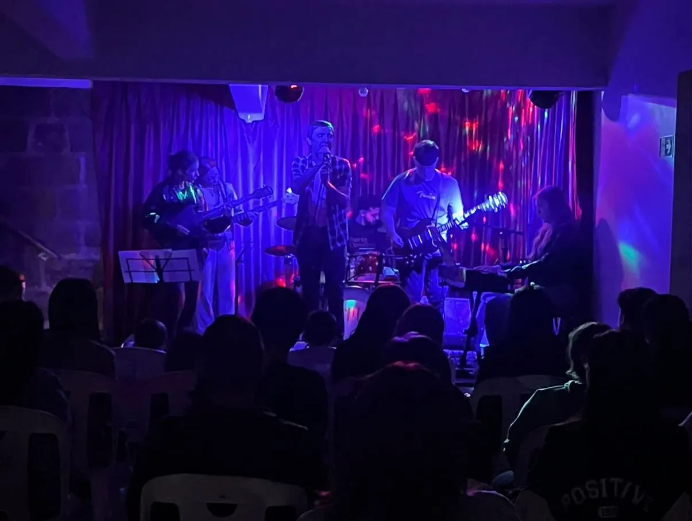
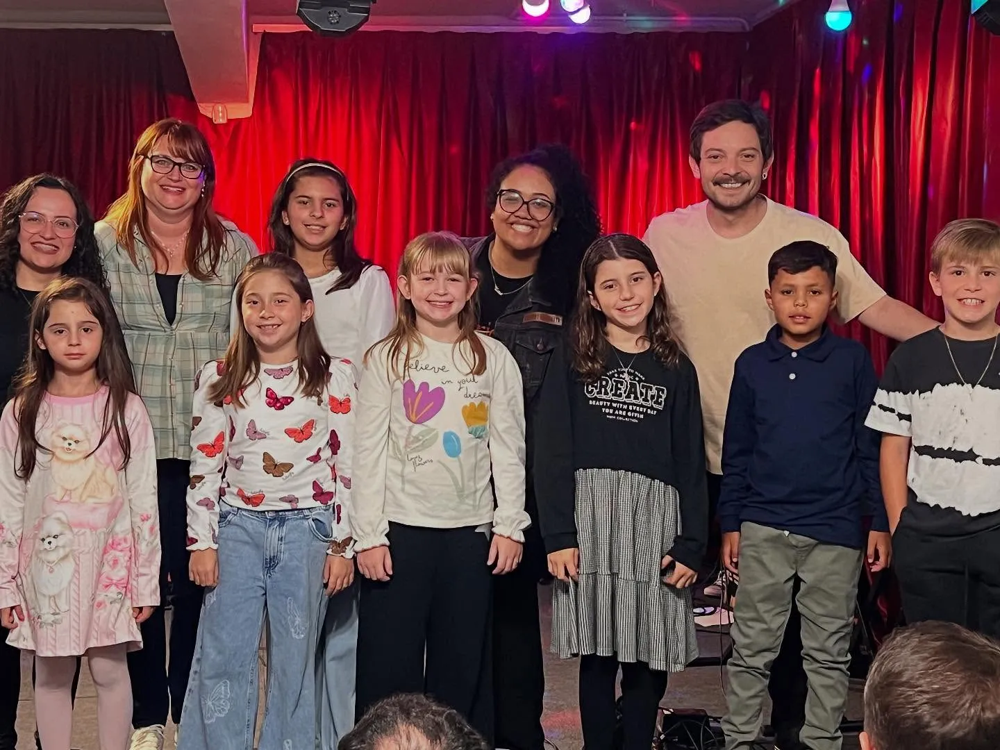
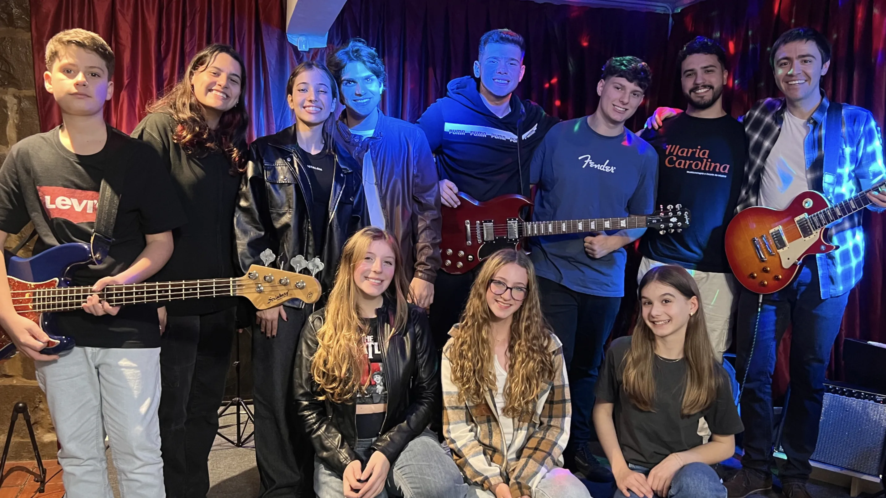
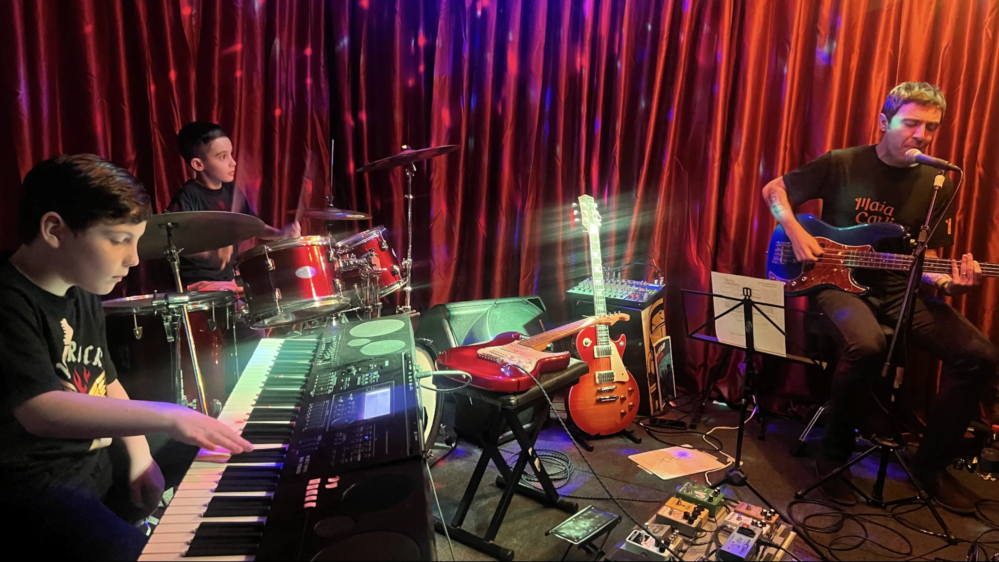
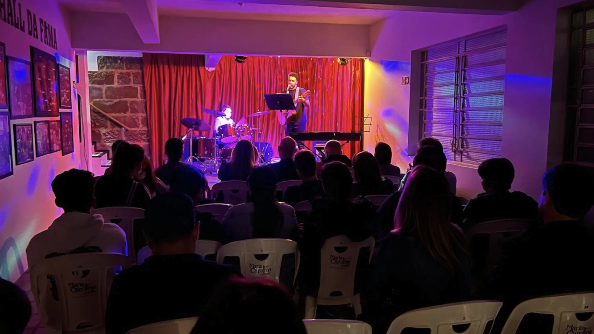
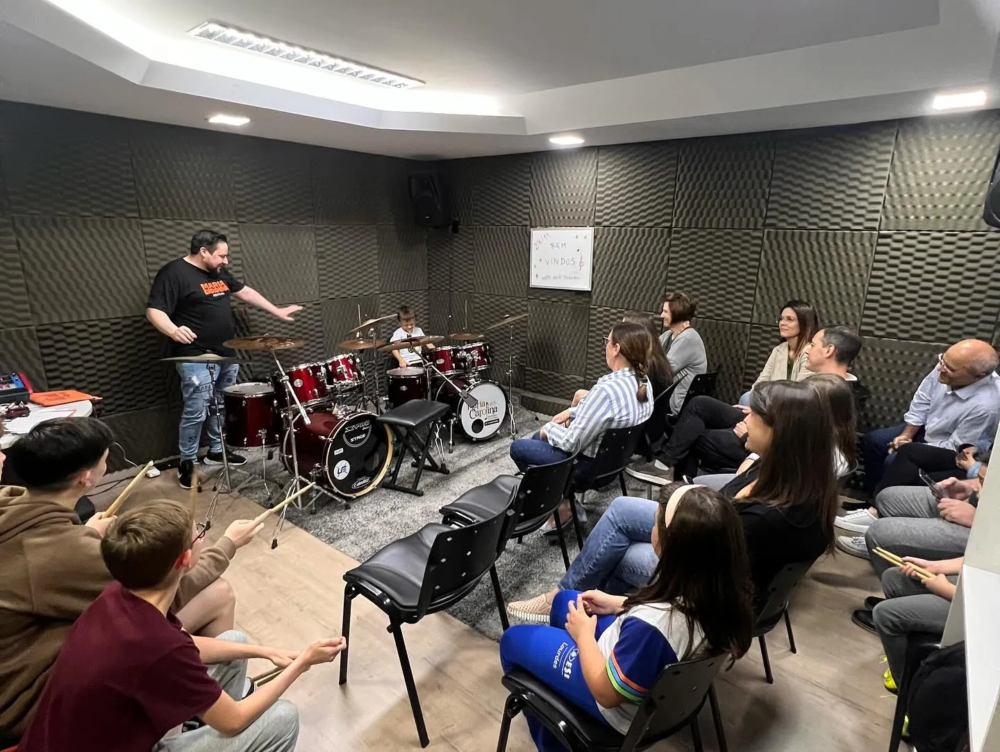
Happy hour
Oferece uma oportunidade única e intimista, dentro da escola, ideal para que familiares e amigos se conectem e acompanhem de perto o desenvolvimento. Este evento proporciona aos nossos alunos a chance de realizar pequenas apresentações, nas quais podem demonstrar suas conquistas musicais, em um ambiente acolhedor e reservado.